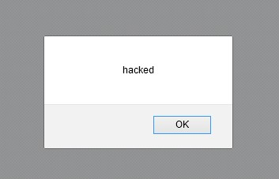
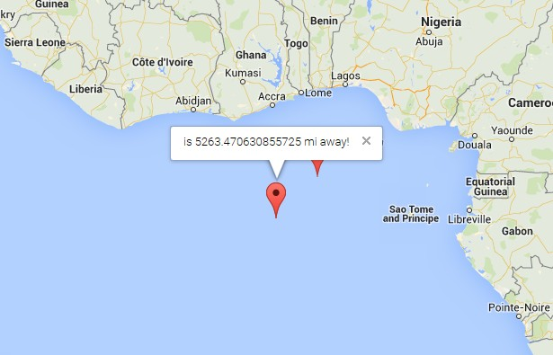

by Mingzhe Li
This project tests Justin Sullivan's security of the Marauder's Map client-side and server-side application.
The Marauder's Map is a system where the user can check-in his/her location and view others' location on the map.
As a security consultant, I will try to find the potential vulnerabilities and offer solutions to address the issues.
The assessment of these applications consists of two parts:
a review of the source code followed by "black-box" testing. The test data will mostly be sent to the /sendLocations API of the server-side application using command-line tool curl.
First and the most obvious issue is that the implementation lacks a data validation process. Any user can send any login/latitude/longitude to the server. An excessive amount of false input will significantly embarrass the application.
Another critical issue is Cross-Site Scripting. The attackers could insert malicious scripts into the data sent to the /sendLocation API, which could lead to serious security issues.
The user is supposed to send a JSON of login, latitude, and longitude via a HTTP POST request. However, it is possible to include certain client-side scripts in a successful submission, such as the following in JavaScript:
curl --data "login=<script>alert('hacked');</script>&lat=0&lng=0" https://jsmaraudersmap.herokuapp.com/sendLocationwhich will cause the server log page to pop up an alert window with potentially misleading message;
the following is even worse:
curl --data "login=<script>alert('hacked');</script>&lat=0&lng=<script>alert('again');</script>" https://jsmaraudersmap.herokuapp.com/sendLocationwhich will cause an application error.
A solution to resolve this issue is to create a whitelist of allowable characters, letters and numbers, to filter the input data. This approach can be applied by using db.collection.update(); Similarly, we will need to verify if the input latitude and longitude are valid floating point numbers.
Because anyone can send any login, latitude, longitude to the server, somebody in Canada can pretend he/she is in Bermuda, or even in the middle of Atlantic Ocean. While this will not cause serious safety issues, an excessive amount of false data input would fail the map visualization. A map filled with pin points and fake information is useless.
In order to prevent that from happening, the application needs to verify the data input. Geolocation software services like Geolite can verify the user's location in accordance with its IP address. The application could call request.ip() to get the IP address and check if its location is near the provided latitude and longitude. If not, the application should not insert the input into the database.
In short, the security issues are created by a
lack of data validation when dealing with user input. By implementing the proper data validation, the security level of the application would be significantly enhanced.
Security always comes at a cost. While these safegaurd measures being implemented, the performance of the application could be slowed down. Data validation could make the application more complicated, and sometimes it would rely on third-party APIs, Geolite in this case, which adds even more complexity.
What safeguard measures should be applied depends on the need and goals of the developer. A balance between performance and security is important. This project encourages me to think more about that in future software development.